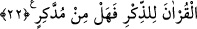
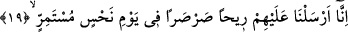
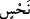

ÖĞÜT ALAN YOK MU?
18. Âd kavmi (Peygamberleri Hûd’u) yalanladı da azabım ve tehdidim nasılmış
(gördüler).
19. Biz onların üstüne, uğursuzluğu devamlı bir günde dondurucu bir rüzgâr
gönderdik.
20. O rüzgâr, insanları, sökülmüş hurma kütükleri gibi yere seriyordu.
21. Nasılmış benim azabım ve uyarılarım!
22. Andolsun biz Kur’ân’ı düşünüp öğüt alınsın diye kolaylaştırdık. Öğüt alan yok
mu?
Hûd (a.s.)’ın kavmi olan “Âd yalanladı da azabım ve uyarılarım nasılmış
(gördüler).” Allah burada sözü kısaltmak ve azaptan vaz geçme olayını hemen
açıklamak için Hûd (a.s.)’ı kavminin ne şekilde yalanladığını açıklamamıştır.
Bu soru, kendilerine bildireceği azap ve uyarıları dinleyenlerin dikkatini önceden
çekmek ve kulak vermelerini sağlamak içindir. Yoksa onu açıkladıktan sonraki
durumdan korkutmak ve onları hayrete düşürmek için değildir. Sanki denilmiş oluyor ki,
“Âd kavmi yalanladı, işittinmi?” yahut, “benim onlara azabımın ve uyarmalarımın nasıl
olduğunu işittiniz.”
19. Biz onların üstüne, uğursuzluğu devamlı bir günde dondurucu bir rüzgâr
gönderdik.
Âyet-i kerîme’de geçen “sarsar” kelimesi, “çok soğuk” anlamındaki “sar”
masdarından türetilmiştir. Yahut “kapı ve kalem sesi” anlamına da gelir. Yâni, onların
üzerine uğultusu ve esmesi şiddetli dondurucu bir rüzgar gönderip musallat ettik.
Fussilet ve diğer sûrelerde de geçtiği gibi, bu batı rüzgarıdır. Kâbe-i Muazzama’nın
arkasından estiği için “Debür” adı da verilir. Âyet-i kerîme’de geçen “
/nahs”